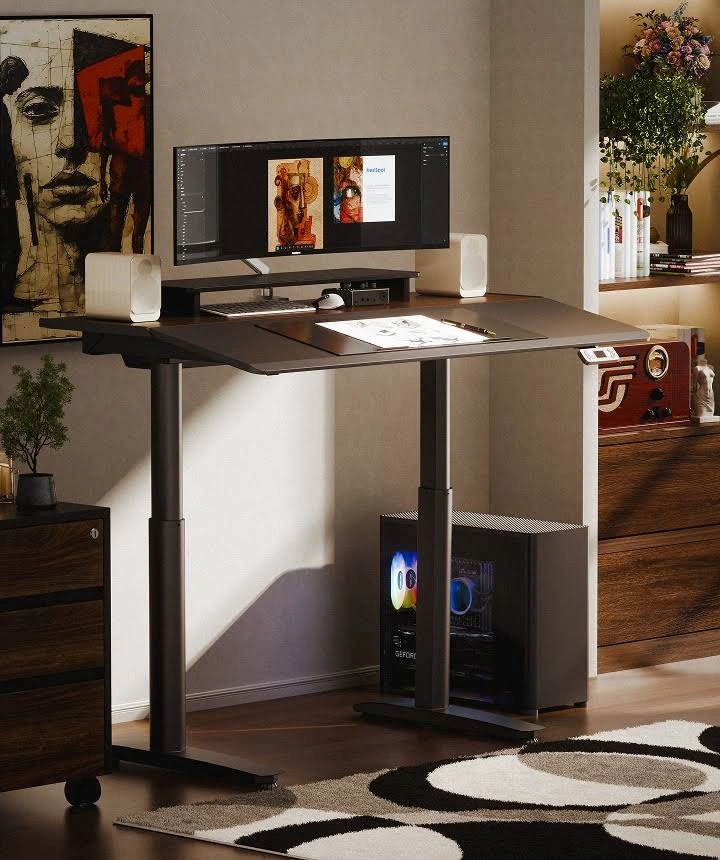

FW-C12 · 白桌也能成为手作工作台
修订顺序：20 / 24 · P2 · 小额探索。顺序为策划测试安排，尚非素材效果排名。
产品：Economy Solid 白色 140×70 cm。
用户：制作场景假设（身份未验证）：兼顾电脑与纸艺、拼贴等轻量爱好的成年人。
需求：工作之外保留展开材料的空间。
卖点：140×70连续桌板。
机会类型：三：新使用场景。
参考什么：参考真实工作道具和任务化桌面；不参考可倾斜桌板。
为什么：P2一体板与尺寸支持轻量纸艺；不宣称耐高温、刀刻或工业承重。
如何差异化：只出现纸张、胶棒和剪刀，配自有切割垫，不在产品台面直接刀刻。
场景：有白色格架和灰蓝墙的多用途房间，工作材料整齐但不过分对称。
构图：桌角近景带出长边和部分立柱，左侧为键鼠、右侧为纸艺区，背景明显低焦。
人物及动作：约30岁用户站着整理纸片，动作远离升降缝隙，桌子保持静止。
渠道：Meta Feed。比例：4:5、1:1。德语主题：Raum für Arbeit und eigene Projekte。
资格依据：一体桌板；单电机；两组记忆高度；白桌白架；对应140×70在售变体。
不能添加的宣称：页面文案提到100–160 cm，但当前可选变体只核验100/120/140 cm；不把160 cm写成可售Solid。
证据边界：有A类实际图片参考；具体原创场景和转化效果尚待测试。图片参考体现视觉方法，不构成竞品效果数据。需求证据：P2；轻量爱好场景为扩展假设。
参考原图
 FLEX-GOOG-012
FLEX-GOOG-012FLEX-GOOG-012 · FlexiSpot · Google · 真实广告内的图像组件（非完整广告版式）
原广告来源。详情日期与德国地区已核验。

FLEX-GOOG-143FLEX-GOOG-143 · FlexiSpot · Google · 真实广告内的图像组件（非完整广告版式）
原广告来源。详情日期与德国地区已核验。